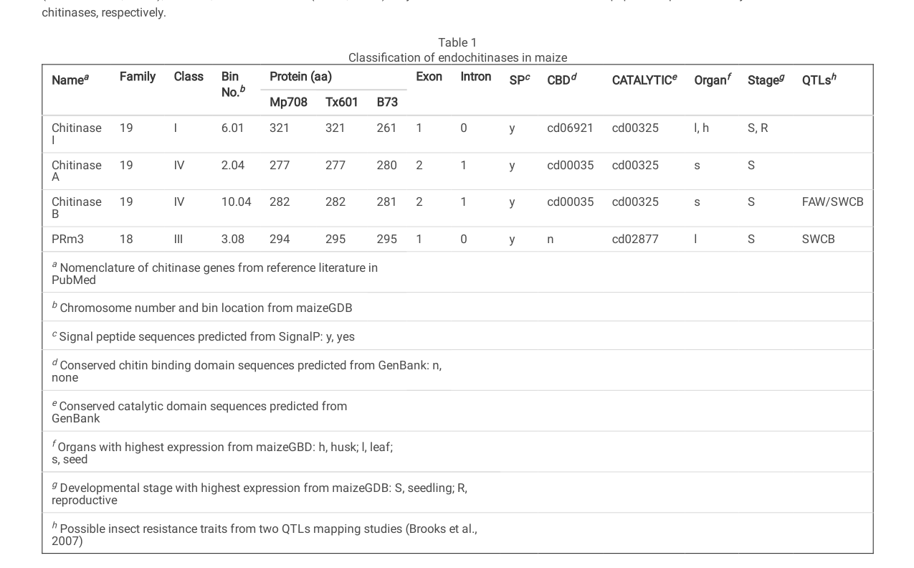

CHIB (P29023; ChitB / seed chitinase B; gene synonym CTB1; maize gene model GRMZM2G005633) is a maize (Zea mays) endochitinase (EC 3.2.1.14) of glycoside hydrolase family 19 (GH19). GH19 chitinases are endo-acting enzymes that hydrolyze the beta-1,4 glycosidic linkages of chitin - a linear polymer of N-acetylglucosamine (GlcNAc) that is the principal structural polysaccharide of fungal cell walls and arthropod exoskeletons - producing chitooligosaccharides via a single-step inverting mechanism. The protein is synthesized as a precursor with an N-terminal signal peptide (residues 1-33) and is secreted; the mature 248-residue chain (residues 34-281) carries an N-terminal hevein-type chitin-binding domain (Chitin-binding type-1, residues 34-68), a short Gly-rich hinge (residues 69-78), and a C-terminal GH19 catalytic domain (residues 79-281, proton-donor active site at Glu145). The chitin-binding module enhances activity on insoluble chitin and contributes to antifungal effectiveness. CHIB is a classic pathogenesis-related (PR-3) basic chitinase: it was first purified from maize seed and characterized as an antifungal protein that defends against chitin-containing fungal pathogens (Huynh et al. 1992), and its transcript is induced ~10-fold by mechanical wounding and fall-armyworm (Spodoptera frugiperda) herbivory, placing it within plant defense responses. Its core molecular function is therefore endochitinase / chitinase activity coupled to chitin binding; its core biological process is chitin catabolism serving antifungal (and likely anti-herbivore) defense in the extracellular/apoplastic compartment and in seed. Maize chitinase B is reported to be somewhat less active than maize chitinase A, and its activity is countered in planta by fungal polyglycine hydrolases that cleave its Gly-rich hinge to disrupt chitin binding.
| GO Term | Evidence | Action | Reason |
|---|---|---|---|
|
GO:0004568
chitinase activity
|
IEA
GO_REF:0000120 |
ACCEPT |
Summary: Chitinase activity assigned by combined automated IEA methods (ARBA/InterPro). This is the core molecular function of CHIB, a GH19 endochitinase (EC 3.2.1.14).
Reason: Correct and central to the gene's function. CHIB belongs to glycoside hydrolase family 19 and is annotated EC 3.2.1.14 (endochitinase); GH19 chitinases hydrolyze the beta-1,4 linkages of chitin. The activity is consistent with the UniProt catalytic-activity statement (random endo-hydrolysis of N-acetyl-beta-D-glucosaminide (1->4)-beta-linkages in chitin and chitodextrins). This is a core function and is appropriately specific.
Supporting Evidence:
file:MAIZE/CHIB/CHIB-deep-research-falcon.md
GH19 chitinases are generally described as **endo-acting** enzymes that hydrolyze
file:MAIZE/CHIB/CHIB-deep-research-falcon.md
a key structural component of fungal cell walls and arthropod exoskeletons.
|
|
GO:0005576
extracellular region
|
IEA
GO_REF:0000044 |
ACCEPT |
Summary: Extracellular localization assigned from the UniProtKB Subcellular Location vocabulary (Secreted). Consistent with the predicted signal peptide and secretory deployment of CHIB.
Reason: CHIB carries an N-terminal signal peptide (residues 1-33) and is annotated "Secreted" in UniProt, consistent with an apoplastic/extracellular pathogenesis-related chitinase that encounters chitin-containing microbes and chitinous insect structures at the cell surface. The localization is appropriate and supported by the secretory architecture.
Supporting Evidence:
file:MAIZE/CHIB/CHIB-deep-research-falcon.md
consistent with secretion and extracellular/apoplastic deployment
file:MAIZE/CHIB/CHIB-deep-research-falcon.md
Likely secreted / apoplastic or extracellular, consistent with signal peptide and seed/pathogenesis-related chitinase annotation
|
|
GO:0005975
carbohydrate metabolic process
|
IEA
GO_REF:0000002 |
MARK AS OVER ANNOTATED |
Summary: Carbohydrate metabolic process assigned by InterPro2GO (IPR016283, Glyco_hydro_19). This is a very broad parent of the gene's true process, chitin catabolism.
Reason: Not wrong - chitin is a carbohydrate (polysaccharide) and its hydrolysis is carbohydrate metabolism - but "carbohydrate metabolic process" is a high-level grouping term that conveys little once the specific process "chitin catabolic process" (GO:0006032, also present in the current GOA) is annotated. The precise function is endo-hydrolysis of chitin. Retaining the vague parent adds no information beyond the specific term, so it is best treated as an over-annotation.
Supporting Evidence:
file:MAIZE/CHIB/CHIB-deep-research-falcon.md
its primary biochemical function is
file:MAIZE/CHIB/CHIB-deep-research-falcon.md
producing chitooligosaccharides.
|
|
GO:0006032
chitin catabolic process
|
IEA
GO_REF:0000002 |
ACCEPT |
Summary: Chitin catabolic process assigned by InterPro2GO (IPR000726, Glyco_hydro_19_cat). This is the precise biological process for a GH19 endochitinase and is the core process of CHIB.
Reason: Correct and at the right level of specificity. CHIB hydrolyzes the beta-1,4 linkages of chitin, a beta-(1->4)-linked N-acetyl-D-glucosamine polysaccharide, breaking it down into chitooligosaccharides - precisely "chitin catabolic process". This is the core biological process and is more informative than the generic parents "carbohydrate metabolic process" and "polysaccharide catabolic process".
Supporting Evidence:
file:MAIZE/CHIB/CHIB-deep-research-falcon.md
its primary biochemical function is
file:MAIZE/CHIB/CHIB-deep-research-falcon.md
producing chitooligosaccharides.
file:MAIZE/CHIB/CHIB-deep-research-falcon.md
GH19 chitinases are generally described as **endo-acting** enzymes that hydrolyze
|
|
GO:0008061
chitin binding
|
IEA
GO_REF:0000002 |
ACCEPT |
Summary: Chitin binding assigned by InterPro2GO (IPR001002/IPR018371/IPR036861, chitin-binding type-1 / hevein domain). CHIB contains an N-terminal chitin-binding domain.
Reason: Correct and supported by the protein architecture. CHIB has an N-terminal hevein-type chitin-binding domain (Chitin-binding type-1, residues 34-68); the CAZy CBM18 / Pfam Chitin_bind_1 assignments confirm the module. The chitin-binding domain enhances activity on insoluble chitin and contributes to antifungal effectiveness. This molecular function is a genuine, specific accessory activity supporting substrate engagement.
Supporting Evidence:
file:MAIZE/CHIB/CHIB-deep-research-falcon.md
typically includes an N-terminal
file:MAIZE/CHIB/CHIB-deep-research-falcon.md
improves performance against insoluble chitinous substrates and contributes to defense effectiveness.
|
|
GO:0008843
endochitinase activity
|
IEA
GO_REF:0000003 |
ACCEPT |
Summary: Endochitinase activity assigned by EC2GO mapping from EC 3.2.1.14. This is the most precise molecular-function term for CHIB and represents its core catalytic activity.
Reason: Correct and the most informative MF term for the gene. CHIB is named "Endochitinase B" with EC 3.2.1.14, and the UniProt catalytic-activity statement describes random endo-hydrolysis of chitin and chitodextrins - i.e. an endo-acting (rather than exo-acting) chitinase. The term is preferred over the more generic "chitinase activity" (GO:0004568) because it specifies the endo mode of cleavage.
Supporting Evidence:
file:MAIZE/CHIB/CHIB-deep-research-falcon.md
GH19 chitinases are generally described as **endo-acting** enzymes that hydrolyze
|
|
GO:0016998
cell wall macromolecule catabolic process
|
IEA
GO_REF:0000002 |
KEEP AS NON CORE |
Summary: Cell wall macromolecule catabolic process assigned by InterPro2GO (IPR000726). This captures the biologically relevant target of CHIB: degradation of chitin in fungal cell walls.
Reason: Reasonable and biologically meaningful: chitin is a structural component of fungal cell walls, and a secreted plant endochitinase degrades fungal-cell-wall chitin as the basis of its antifungal action. The term is correct but is a process-level framing of the same activity already captured by "chitin catabolic process" (GO:0006032), which is the core, more direct term. Retain this as a non-core descriptor of the host-defense context (degradation of the microbial cell-wall macromolecule) rather than as the primary process.
Supporting Evidence:
file:MAIZE/CHIB/CHIB-deep-research-falcon.md
a key structural component of fungal cell walls and arthropod exoskeletons.
file:MAIZE/CHIB/CHIB-deep-research-falcon.md
biologically relevant form in fungal cell walls.
|
|
GO:0005576
extracellular region
|
ISS
GO_REF:0000024 |
ACCEPT |
Summary: Extracellular localization transferred by curator ISS from the ortholog UniProtKB:P29022 (maize endochitinase A). Duplicates the IEA extracellular-region annotation with stronger, orthology-based evidence.
Reason: Correct and consistent with the secretory architecture of CHIB (signal peptide, "Secreted" subcellular location) and with the IEA extracellular-region annotation. ISS transfer from the closely related maize endochitinase A (P29022) is appropriate given the shared GH19 chitinase family, signal peptide and secreted-defense-protein role. Duplicate annotations with different evidence codes are acceptable.
Supporting Evidence:
file:MAIZE/CHIB/CHIB-deep-research-falcon.md
Likely secreted / apoplastic or extracellular, consistent with signal peptide and seed/pathogenesis-related chitinase annotation
|
|
GO:0008843
endochitinase activity
|
ISS
GO_REF:0000024 |
ACCEPT |
Summary: Endochitinase activity transferred by curator ISS from the ortholog UniProtKB:P29022 (maize endochitinase A). Duplicates the EC-based IEA endochitinase annotation.
Reason: Correct core molecular function, here supported by orthology-based curator transfer from maize endochitinase A (P29022), the entry from which CHIB's EC 3.2.1.14 / catalytic-activity statement was itself transferred by similarity. Consistent with the EC2GO IEA endochitinase annotation and with GH19 family assignment. Duplicate annotations with different evidence codes are acceptable.
Supporting Evidence:
file:MAIZE/CHIB/CHIB-deep-research-falcon.md
GH19 chitinases are generally described as **endo-acting** enzymes that hydrolyze
|
|
GO:0006952
defense response
|
IEA
GO_REF:0000043 |
MARK AS OVER ANNOTATED |
Summary: SPKW (GO_REF:0000043) annotation derived from the UniProt keyword "Plant defense"; snapshot-only, removed in the current GOA release. CHIB is a bona fide antifungal pathogenesis-related (PR-3) chitinase, so the defense role is genuinely correct - but the bare "defense response" parent is over-broad relative to the gene's specific antifungal action.
Reason: The essence is correct: CHIB was first purified and characterized as an antifungal protein from maize seed and is annotated by UniProt as functioning in "defense against chitin-containing fungal pathogens", and its transcript is induced ~10-fold by wounding and fall-armyworm herbivory. However, "defense response" (GO:0006952) is a high-level grouping term, and the antifungal defense operates THROUGH the gene's chitinase enzymatic activity (secreted GH19 endochitinase degrading fungal-cell-wall chitin). Once the core molecular function (chitinase / endochitinase activity, chitin binding) and the chitin/cell-wall-macromolecule catabolic processes are annotated, the bare "defense response" parent adds little. The genuine biology is better captured by the more specific child term "defense response to fungus" (GO:0050832), proposed below as a NEW annotation. GOA's removal of the generic keyword-derived term is therefore acceptable; the defense role should be retained at the more precise antifungal level.
Proposed replacements:
defense response to fungus
Supporting Evidence:
file:MAIZE/CHIB/CHIB-deep-research-falcon.md
A maize primary study investigating insect herbivory identified
file:MAIZE/CHIB/CHIB-deep-research-falcon.md
This supports CHIB’s placement within plant defense signaling frameworks in which physical damage and herbivore-associated cues activate defense gene expression.
|
|
GO:0000272
polysaccharide catabolic process
|
IEA
GO_REF:0000043 |
MODIFY |
Summary: SPKW (GO_REF:0000043) annotation derived from the UniProt keywords "Polysaccharide degradation" / "Chitin degradation"; snapshot-only, removed in the current GOA release. The term is correct (chitin is a polysaccharide and CHIB catabolizes it) but is a generic parent of the precise process, chitin catabolic process.
Reason: Chitin is a linear polysaccharide of beta-(1->4)-linked N-acetyl-D-glucosamine, and CHIB hydrolyzes it - so "polysaccharide catabolic process" (GO:0000272) is not wrong, just under-specific. The exact process is "chitin catabolic process" (GO:0006032), which is the direct child describing breakdown of chitin and which is ALREADY present and retained in the current GOA (InterPro2GO, IPR000726). The annotation should therefore be MODIFIED to GO:0006032; the keyword-derived generic parent can be dropped because the specific child is already annotated. No correct biology is lost by removing the generic SPKW term.
Proposed replacements:
chitin catabolic process
Supporting Evidence:
file:MAIZE/CHIB/CHIB-deep-research-falcon.md
its primary biochemical function is
file:MAIZE/CHIB/CHIB-deep-research-falcon.md
producing chitooligosaccharides.
file:MAIZE/CHIB/CHIB-deep-research-falcon.md
GH19 chitinases are generally described as **endo-acting** enzymes that hydrolyze
|
|
GO:0050832
defense response to fungus
|
IEA
GO_REF:0000043 |
NEW |
Summary: CHIB is an antifungal pathogenesis-related chitinase whose biological role is defense against chitin-containing fungal pathogens. This specific child of "defense response" is the accurate process term and is proposed to replace the retired generic "defense response" SPKW annotation.
Reason: CHIB ("Seed chitinase B") was first purified and characterized as an antifungal protein from maize seed (Huynh et al. 1992), and UniProt annotates its FUNCTION as "Defense against chitin-containing fungal pathogens"; the host-defense mechanism is enzymatic degradation of fungal-cell-wall chitin by the secreted GH19 endochitinase, an action that fungi counter via polyglycine hydrolases that cleave the chitinase hinge. The biologically precise process term is therefore "defense response to fungus" (GO:0050832), which is more informative than the bare "defense response" parent and captures the antifungal specificity supported by the chitinase molecular function. (Note: the inducible-defense evidence also includes a wounding/herbivory component; the antifungal role is the best-supported and most specific defense process.)
Supporting Evidence:
file:MAIZE/CHIB/CHIB-deep-research-falcon.md
a key structural component of fungal cell walls and arthropod exoskeletons.
file:MAIZE/CHIB/CHIB-deep-research-falcon.md
improves performance against insoluble chitinous substrates and contributes to defense effectiveness.
|
Q: Does the purified maize CHIB protein have direct antifungal activity against plant-pathogenic fungi (e.g. growth inhibition / hyphal-tip lysis), and how does its potency compare with maize chitinase A, which is reported to be more active?
Q: What are CHIB's biochemical parameters (Km, pH/temperature optima, soluble vs colloidal/ insoluble chitin preference) and is the N-terminal chitin-binding domain required for activity on insoluble chitin, as suggested for related maize GH19 chitinases?
Q: Is CHIB's antifungal role compromised in planta by fungal polyglycine hydrolases that cleave its Gly-rich hinge, and does this hinge cleavage measurably reduce chitin binding and antifungal efficacy during infection?
Experiment: Express and purify recombinant mature CHIB and assay endochitinase activity on soluble (4-MU-chitooligosaccharide) and insoluble/colloidal chitin substrates, determining kinetic constants and pH/temperature optima; include a chitin-binding-domain-deletion variant.
Hypothesis: CHIB is an active endo-acting GH19 chitinase whose N-terminal chitin-binding domain is required for efficient hydrolysis of insoluble chitin.
Type: in vitro enzyme kinetics
Experiment: Test purified CHIB for antifungal activity against chitin-containing maize pathogens (e.g. Aspergillus, Fusarium) by radial-growth-inhibition and hyphal-lysis assays, and compare to maize chitinase A.
Hypothesis: CHIB inhibits fungal growth by degrading hyphal-tip cell-wall chitin, consistent with its classification as an antifungal pathogenesis-related chitinase.
Type: antifungal bioassay
Experiment: Generate maize CHIB loss-of-function and overexpression lines and challenge with fungal pathogens and fall-armyworm larvae, scoring disease/herbivory resistance and quantifying in-planta chitinase activity and CHIB hinge cleavage by fungal polyglycine hydrolases.
Hypothesis: CHIB contributes to quantitative antifungal and anti-herbivore defense, and its efficacy is modulated by fungal hinge-cleaving polyglycine hydrolases.
Type: reverse-genetics and pathogen/herbivore challenge
The research report should be a detailed narrative explaining the function, biological processes, and localization of the gene product. Citations should be given for all claims.
You should prioritize authoritative reviews and primary scientific literature when conducting research. You can supplement
this with annotations you find in gene/protein databases, but these can be outdated or inaccurate.
We are specifically interested in the primary function of the gene - for enzymes, what reaction is catalyzed, and what is the substrate specificity? For transporters, what is the substrate? For structural proteins or adapters, what is the broader structural role? For signaling molecules, what is the role in the pathway.
We are interested in where in or outside the cell the gene product carries out its function.
We are also interested in the signaling or biochemical pathways in which the gene functions. We are less interested in broad pleiotropic effects, except where these elucidate the precise role.
Include evidence where possible. We are interested in both experimental evidence as well as inference from structure, evolution, or bioinformatic analysis. Precise studies should be prioritized over high-throughput, where available.
The target is Zea mays (maize) Endochitinase B, UniProt accession P29023, also called ChitB / seed chitinase B, gene name CHIB (synonym CTB1). In maize genomic resources and the primary experimental literature retrieved here, “chitinase B / ChiB / ChitB” corresponds to gene model GRMZM2G005633, annotated as a GH19 plant chitinase and class IV endochitinase, matching the UniProt description (GH19 family; precursor/secreted). (han2021maizeendochitinaseexpressiona pages 5-6, han2021maizeendochitinaseexpression media 094c2120)
CHIB (P29023) encodes a plant endochitinase (EC 3.2.1.14) in glycoside hydrolase family 19 (GH19). GH19 chitinases are generally described as endo-acting enzymes that hydrolyze β-1,4 glycosidic linkages in chitin (a linear polymer of N-acetylglucosamine, GlcNAc), a key structural component of fungal cell walls and arthropod exoskeletons. (han2021maizeendochitinaseexpressiona pages 1-3, ubhayasekera2011structureandfunction pages 1-2)
A central mechanistic feature of GH19 chitinases is a single-step inverting mechanism (i.e., inversion of anomeric configuration during hydrolysis). The catalytic site lies in a wide cleft within a highly α-helical, bilobed protein fold; catalysis is associated with conserved glutamate residues separated by distances typical of inverting glycosidases. (ubhayasekera2011structureandfunction pages 3-5, ubhayasekera2011structureandfunction pages 6-7)
Plant GH19 chitinases are commonly grouped into classes (I–VI in some schemes). Class differences are associated with domain composition and loop architecture bordering the active-site cleft:
- Class I vs II: broadly similar, but class I typically includes an N-terminal chitin-binding module (CtBM/CBD) that can enhance activity on insoluble chitin and contribute to antifungal effectiveness. (ubhayasekera2011structureandfunction pages 1-2, ubhayasekera2011structureandfunction pages 5-6)
- Class IV: compared to class I/II, class IV enzymes can show loop deletions and are described in one maize-focused study as containing a CBD but lacking a particular C-terminal extension (CTE) in that class definition. (han2021maizeendochitinaseexpressiona pages 3-4, ubhayasekera2011structureandfunction pages 5-6)
In maize, CHIB/ChiB is classified as a class IV GH19 chitinase and is predicted to contain both a signal peptide and a chitin-binding domain (CBD) plus the catalytic domain. (han2021maizeendochitinaseexpressiona pages 5-6, han2021maizeendochitinaseexpression media 094c2120)
A key experimentally grounded annotation from maize is that ChiB/CHIB is predicted to contain:
- Signal peptide (SP) → consistent with secretion and extracellular/apoplastic deployment
- Chitin-binding domain (CBD; cd00035)
- Catalytic domain (cd00325)
- Length in multiple maize inbreds around 281–282 aa, with predicted mature protein mass around ~29 kDa. (han2021maizeendochitinaseexpressiona pages 5-6, han2021maizeendochitinaseexpression media 094c2120)
These properties support the functional model that CHIB is synthesized as a precursor that is directed into the secretory pathway, and likely functions in the apoplast/extracellular space (including seed extracellular matrices), where it can encounter chitin-containing microbes or chitinous insect structures.
Direct CHIB-specific kinetic constants were not available in the retrieved CHIB-specific evidence. However, CHIB’s assignment to EC 3.2.1.14 and GH19 strongly supports that its primary biochemical function is endo-hydrolysis of β-1,4 linkages in chitin, producing chitooligosaccharides. (han2021maizeendochitinaseexpressiona pages 1-3, ubhayasekera2011structureandfunction pages 1-2)
A maize primary study investigating insect herbivory identified ChiB/CHIB as one of four cloned maize chitinase genes and reports that transcript abundance increases dramatically in response to mechanical wounding and fall armyworm (Spodoptera frugiperda) feeding. In that dataset, the fold-change induction of ChiB was generally ~10-fold (and similar magnitude to ChiI), with genotype-dependent basal expression (higher basal ChiB expression in Mp708 than Tx601). (han2021maizeendochitinaseexpressiona pages 6-7)
This supports CHIB’s placement within plant defense signaling frameworks in which physical damage and herbivore-associated cues activate defense gene expression.
In the same maize study, a compiled organ/development expression annotation indicates that ChiB has highest expression in seed among surveyed organs (as presented in their Table annotation). (han2021maizeendochitinaseexpressiona pages 5-6, han2021maizeendochitinaseexpression media 094c2120)
Although the enzymatic activity assays used in the maize study could not discriminate among individual chitinase isoforms, the authors detected chitinase activity in fall armyworm food bolus and frass, indicating that plant chitinases can remain active after ingestion and transit through the insect gut environment—supporting plausibility of direct anti-insect action by chitinases against chitin-containing structures (e.g., peritrophic matrix). (han2021maizeendochitinaseexpressiona pages 6-7)
ChiB maps to chromosome 10 and co-localizes with insect resistance QTL regions reported for fall armyworm and southwestern corn borer (as summarized in the maize study’s annotation). While this does not prove causality, it is consistent with CHIB being a plausible contributor to quantitative resistance. (han2021maizeendochitinaseexpressiona pages 5-6)
A 2024 study/review focusing on root-associated chitinases performed modeling and mutagenesis on a different maize GH19 chitinase (ZmChi19A), confirming key catalytic residues and domain requirements for activity against insoluble substrates and fungi. Key quantitative findings include:
- Apparent Km ~30 µM for the soluble substrate 4-MU-GlcNAc3 (for ZmChi19A). (shobade2024plantrootassociated pages 8-9)
- Activity optima: ZmChi19A activity described as optimal across pH 7–9 and 50–60°C (with one excerpt specifying pH 8 and 50°C). (shobade2024plantrootassociated pages 1-2, shobade2024plantrootassociated pages 6-8)
- Catalytic residues validated by mutagenesis: Glu147 and Glu169 are essential for activity. (shobade2024plantrootassociated pages 8-9, shobade2024plantrootassociated pages 6-8)
Although this is not CHIB, it provides a 2024 experimentally grounded biochemical reference point for how maize GH19 enzymes achieve chitin hydrolysis and antifungal effects, and underscores the functional importance of CBD-associated interactions with insoluble chitinous surfaces—relevant for interpreting CHIB’s predicted SP + CBD architecture. (shobade2024plantrootassociated pages 8-9, shobade2024plantrootassociated pages 6-8)
A 2024 broad review emphasizes chitinases as candidate biopesticides/biocontrol agents and as tools for sustainability (e.g., valorizing chitin-rich waste), while highlighting risks such as non-target effects and dual-use concerns. It also provides quantitative global context on chitin availability and waste. (unuofin2024chitinasesexpandingthe pages 1-2, unuofin2024chitinasesexpandingthe pages 12-13)
A 2024 applied study (not maize CHIB; instead bacterial Serratia marcescens ChiB, GH18) illustrates current translational implementation of chitinase biology for maize pest control. Key data:
- Source strain showed 250 U/mg chitinase activity; recombinant expression increased production 2.5-fold. (elsayed2024genecloningheterologous pages 1-2)
- In laboratory assays against Spodoptera frugiperda, reported mortality 92.75 ± 0.17% vs control 8 ± 0.14% (positive chemical control emamectin benzoate: 98.31 ± 0.28%). (elsayed2024genecloningheterologous pages 11-13)
- Field trial implementation details: crude enzyme solution 2000 U/mL, applied 10 mL per plant (knapsack sprayer), with repeated application. (elsayed2024genecloningheterologous pages 21-22)
- Field outcomes included reductions in larval pupation of 75% at 7 days and 88.66% at 10 days post-treatment (emamectin: 86% and 91.3%). (elsayed2024genecloningheterologous pages 11-13)
This does not functionally annotate maize CHIB, but it demonstrates that chitinases are being evaluated in controlled field conditions on maize with measurable efficacy, supporting the relevance of plant chitinases (including CHIB) as part of broader chitinase-enabled integrated pest management concepts. (elsayed2024genecloningheterologous pages 11-13, elsayed2024genecloningheterologous pages 21-22)
The maize herbivory study provides a mechanistic implementation concept on the plant side: CHIB expression is inducible (~10-fold) under insect feeding and wounding, and chitinase activity can persist through insect digestion. This supports the premise that endogenous plant chitinases (including CHIB) could contribute to resistance traits and/or be leveraged in breeding/engineering approaches, even though direct CHIB efficacy assays were not retrieved here. (han2021maizeendochitinaseexpressiona pages 6-7)
The GH19 structural review emphasizes that GH19 enzymes use a wide cleft in an α-helical bilobed fold and that loop architecture and presence/absence of chitin-binding modules can modulate substrate engagement—particularly for insoluble chitin—which is often the biologically relevant form in fungal cell walls. This supports the interpretation that CHIB’s predicted CBD likely improves performance against insoluble chitinous substrates and contributes to defense effectiveness. (ubhayasekera2011structureandfunction pages 5-6, ubhayasekera2011structureandfunction pages 2-3)
The GH19 review discusses extracellular targeting trends for some classes (including class IV in the excerpt) associated with absence of specific C-terminal features, and the maize CHIB prediction includes a signal peptide, consistent with secretion to sites of pathogen/insect interface. (ubhayasekera2011structureandfunction pages 2-3, han2021maizeendochitinaseexpressiona pages 5-6)
The 2024 broad review frames chitinases as promising for sustainable agriculture and waste valorization, but explicitly raises concerns about ecological impact, resistance evolution, and governance/dual-use risks, recommending careful consideration when deploying chitinase technologies. (unuofin2024chitinasesexpandingthe pages 12-13)
| Gene/protein | Names / identifiers | Enzyme class | Predicted domains / architecture | Approx. length / mass | Likely localization | Inducing conditions / expression context | Recent biochemical examples / notes | Key supporting citations |
|---|---|---|---|---|---|---|---|---|
| CHIB (target gene) | Endochitinase B; ChitB; seed chitinase B; UniProt P29023; gene model GRMZM2G005633 | EC 3.2.1.14; glycoside hydrolase family 19 (GH19); class IV plant endochitinase | Signal peptide present; chitin-binding domain (CBD; cd00035) present; catalytic domain (cd00325) present; class IV GH19 architecture | ~281–282 aa; predicted mature protein ~29 kDa | Likely secreted / apoplastic or extracellular, consistent with signal peptide and seed/pathogenesis-related chitinase annotation | Transcript abundance and total chitinase activity increase after mechanical wounding and fall armyworm herbivory; high organ expression reported in seed; Table 1 image supports SP/CBD/domain assignment | Direct CHIB-specific kinetic constants were not provided in the retrieved excerpts; function is inferred as an endochitinase that hydrolyzes β-1,4 linkages in chitin, consistent with GH19 catalytic mechanism | (han2021maizeendochitinaseexpressiona pages 5-6, han2021maizeendochitinaseexpressiona pages 3-4, han2021maizeendochitinaseexpressiona pages 1-3, han2021maizeendochitinaseexpression media 094c2120) |
| ZmChi19A (comparison only; different maize GH19 gene, not CHIB) | Zea mays basic endochitinase; root-associated GH19 chitinase | GH19; class I endochitinase | N-terminal hevein-like CBD; α-helical catalytic domain; flexible C-terminal domain; catalytic residues E147 and E169 | Not summarized in retrieved excerpt | Root-secreted / rhizosphere-associated | Studied as a root-associated defense enzyme; antifungal activity against Aspergillus niger | Apparent Km ~30 µM for 4-MU-GlcNAc3; optimum around pH 7–9 and 50–60°C (more specifically pH 8 and 50°C in one excerpt); CBD and flexible C-terminal domain are required for efficient colloidal chitin cleavage and fungal growth inhibition | (shobade2024plantrootassociated pages 8-9, shobade2024plantrootassociated pages 6-8, shobade2024plantrootassociated pages 1-2, shobade2024plantrootassociated pages 4-6) |
Table: This table summarizes the core functional annotation for the maize CHIB/ChitB protein targeted in the report, using evidence that specifically matches UniProt P29023 and the maize gene model GRMZM2G005633. It also includes a clearly separated comparison row for a different maize GH19 chitinase, ZmChi19A, to illustrate recent biochemical parameters available for related GH19 enzymes.
In addition, the following visual evidence directly supports CHIB’s predicted domain/class assignment in maize (Table 1 from Han et al. 2021): (han2021maizeendochitinaseexpression media 094c2120)
References
(han2021maizeendochitinaseexpressiona pages 5-6): Yang Han, Erin B. Taylor, and Dawn Luthe. Maize endochitinase expression in response to fall armyworm herbivory. May 2021. URL: https://doi.org/10.1007/s10886-021-01284-9, doi:10.1007/s10886-021-01284-9. This article has 18 citations and is from a peer-reviewed journal.
(han2021maizeendochitinaseexpression media 094c2120): Yang Han, Erin B. Taylor, and Dawn Luthe. Maize endochitinase expression in response to fall armyworm herbivory. May 2021. URL: https://doi.org/10.1007/s10886-021-01284-9, doi:10.1007/s10886-021-01284-9. This article has 18 citations and is from a peer-reviewed journal.
(han2021maizeendochitinaseexpressiona pages 1-3): Yang Han, Erin B. Taylor, and Dawn Luthe. Maize endochitinase expression in response to fall armyworm herbivory. May 2021. URL: https://doi.org/10.1007/s10886-021-01284-9, doi:10.1007/s10886-021-01284-9. This article has 18 citations and is from a peer-reviewed journal.
(ubhayasekera2011structureandfunction pages 1-2): Wimal Ubhayasekera. Structure and function of chitinases from glycoside hydrolase family 19. Polymer International, 60:890-896, Jun 2011. URL: https://doi.org/10.1002/pi.3028, doi:10.1002/pi.3028. This article has 44 citations and is from a peer-reviewed journal.
(ubhayasekera2011structureandfunction pages 3-5): Wimal Ubhayasekera. Structure and function of chitinases from glycoside hydrolase family 19. Polymer International, 60:890-896, Jun 2011. URL: https://doi.org/10.1002/pi.3028, doi:10.1002/pi.3028. This article has 44 citations and is from a peer-reviewed journal.
(ubhayasekera2011structureandfunction pages 6-7): Wimal Ubhayasekera. Structure and function of chitinases from glycoside hydrolase family 19. Polymer International, 60:890-896, Jun 2011. URL: https://doi.org/10.1002/pi.3028, doi:10.1002/pi.3028. This article has 44 citations and is from a peer-reviewed journal.
(ubhayasekera2011structureandfunction pages 5-6): Wimal Ubhayasekera. Structure and function of chitinases from glycoside hydrolase family 19. Polymer International, 60:890-896, Jun 2011. URL: https://doi.org/10.1002/pi.3028, doi:10.1002/pi.3028. This article has 44 citations and is from a peer-reviewed journal.
(han2021maizeendochitinaseexpressiona pages 3-4): Yang Han, Erin B. Taylor, and Dawn Luthe. Maize endochitinase expression in response to fall armyworm herbivory. May 2021. URL: https://doi.org/10.1007/s10886-021-01284-9, doi:10.1007/s10886-021-01284-9. This article has 18 citations and is from a peer-reviewed journal.
(han2021maizeendochitinaseexpressiona pages 6-7): Yang Han, Erin B. Taylor, and Dawn Luthe. Maize endochitinase expression in response to fall armyworm herbivory. May 2021. URL: https://doi.org/10.1007/s10886-021-01284-9, doi:10.1007/s10886-021-01284-9. This article has 18 citations and is from a peer-reviewed journal.
(shobade2024plantrootassociated pages 8-9): Samuel O. Shobade, Olga A. Zabotina, and Marit Nilsen-Hamilton. Plant root associated chitinases: structures and functions. Frontiers in Plant Science, Feb 2024. URL: https://doi.org/10.3389/fpls.2024.1344142, doi:10.3389/fpls.2024.1344142. This article has 28 citations.
(shobade2024plantrootassociated pages 1-2): Samuel O. Shobade, Olga A. Zabotina, and Marit Nilsen-Hamilton. Plant root associated chitinases: structures and functions. Frontiers in Plant Science, Feb 2024. URL: https://doi.org/10.3389/fpls.2024.1344142, doi:10.3389/fpls.2024.1344142. This article has 28 citations.
(shobade2024plantrootassociated pages 6-8): Samuel O. Shobade, Olga A. Zabotina, and Marit Nilsen-Hamilton. Plant root associated chitinases: structures and functions. Frontiers in Plant Science, Feb 2024. URL: https://doi.org/10.3389/fpls.2024.1344142, doi:10.3389/fpls.2024.1344142. This article has 28 citations.
(unuofin2024chitinasesexpandingthe pages 1-2): John Onolame Unuofin, Olubusola Ayoola Odeniyi, Omolara Sola Majengbasan, Aboi Igwaran, Karabelo MacMillan Moloantoa, Zenzile Peter Khetsha, Samuel Ayodele Iwarere, and Michael Olawale Daramola. Chitinases: expanding the boundaries of knowledge beyond routinized chitin degradation. Environmental Science and Pollution Research International, 31:38045-38060, May 2024. URL: https://doi.org/10.1007/s11356-024-33728-6, doi:10.1007/s11356-024-33728-6. This article has 54 citations.
(unuofin2024chitinasesexpandingthe pages 12-13): John Onolame Unuofin, Olubusola Ayoola Odeniyi, Omolara Sola Majengbasan, Aboi Igwaran, Karabelo MacMillan Moloantoa, Zenzile Peter Khetsha, Samuel Ayodele Iwarere, and Michael Olawale Daramola. Chitinases: expanding the boundaries of knowledge beyond routinized chitin degradation. Environmental Science and Pollution Research International, 31:38045-38060, May 2024. URL: https://doi.org/10.1007/s11356-024-33728-6, doi:10.1007/s11356-024-33728-6. This article has 54 citations.
(elsayed2024genecloningheterologous pages 1-2): Ghada M. El-Sayed, Maha T. H. Emam, Maher A. Hammad, and Shaymaa H. Mahmoud. Gene cloning, heterologous expression, and in silico analysis of chitinase b from serratia marcescens for biocontrol of spodoptera frugiperda larvae infesting maize crops. Molecules, 29:1466, Mar 2024. URL: https://doi.org/10.3390/molecules29071466, doi:10.3390/molecules29071466. This article has 19 citations.
(elsayed2024genecloningheterologous pages 11-13): Ghada M. El-Sayed, Maha T. H. Emam, Maher A. Hammad, and Shaymaa H. Mahmoud. Gene cloning, heterologous expression, and in silico analysis of chitinase b from serratia marcescens for biocontrol of spodoptera frugiperda larvae infesting maize crops. Molecules, 29:1466, Mar 2024. URL: https://doi.org/10.3390/molecules29071466, doi:10.3390/molecules29071466. This article has 19 citations.
(elsayed2024genecloningheterologous pages 21-22): Ghada M. El-Sayed, Maha T. H. Emam, Maher A. Hammad, and Shaymaa H. Mahmoud. Gene cloning, heterologous expression, and in silico analysis of chitinase b from serratia marcescens for biocontrol of spodoptera frugiperda larvae infesting maize crops. Molecules, 29:1466, Mar 2024. URL: https://doi.org/10.3390/molecules29071466, doi:10.3390/molecules29071466. This article has 19 citations.
(ubhayasekera2011structureandfunction pages 2-3): Wimal Ubhayasekera. Structure and function of chitinases from glycoside hydrolase family 19. Polymer International, 60:890-896, Jun 2011. URL: https://doi.org/10.1002/pi.3028, doi:10.1002/pi.3028. This article has 44 citations and is from a peer-reviewed journal.
(shobade2024plantrootassociated pages 4-6): Samuel O. Shobade, Olga A. Zabotina, and Marit Nilsen-Hamilton. Plant root associated chitinases: structures and functions. Frontiers in Plant Science, Feb 2024. URL: https://doi.org/10.3389/fpls.2024.1344142, doi:10.3389/fpls.2024.1344142. This article has 28 citations.

id: P29023
gene_symbol: CHIB
product_type: PROTEIN
status: COMPLETE
taxon:
id: NCBITaxon:4577
label: Zea mays
description: >
CHIB (P29023; ChitB / seed chitinase B; gene synonym CTB1; maize gene model
GRMZM2G005633) is a maize (Zea mays) endochitinase (EC 3.2.1.14) of glycoside
hydrolase family 19 (GH19). GH19 chitinases are endo-acting enzymes that hydrolyze
the beta-1,4 glycosidic linkages of chitin - a linear polymer of N-acetylglucosamine
(GlcNAc) that is the principal structural polysaccharide of fungal cell walls and
arthropod exoskeletons - producing chitooligosaccharides via a single-step inverting
mechanism. The protein is synthesized as a precursor with an N-terminal signal peptide
(residues 1-33) and is secreted; the mature 248-residue chain (residues 34-281) carries
an N-terminal hevein-type chitin-binding domain (Chitin-binding type-1, residues 34-68),
a short Gly-rich hinge (residues 69-78), and a C-terminal GH19 catalytic domain (residues
79-281, proton-donor active site at Glu145). The chitin-binding module enhances activity
on insoluble chitin and contributes to antifungal effectiveness. CHIB is a classic
pathogenesis-related (PR-3) basic chitinase: it was first purified from maize seed and
characterized as an antifungal protein that defends against chitin-containing fungal
pathogens (Huynh et al. 1992), and its transcript is induced ~10-fold by mechanical
wounding and fall-armyworm (Spodoptera frugiperda) herbivory, placing it within plant
defense responses. Its core molecular function is therefore endochitinase / chitinase
activity coupled to chitin binding; its core biological process is chitin catabolism
serving antifungal (and likely anti-herbivore) defense in the extracellular/apoplastic
compartment and in seed. Maize chitinase B is reported to be somewhat less active than
maize chitinase A, and its activity is countered in planta by fungal polyglycine
hydrolases that cleave its Gly-rich hinge to disrupt chitin binding.
existing_annotations:
- term:
id: GO:0004568
label: chitinase activity
evidence_type: IEA
original_reference_id: GO_REF:0000120
qualifier: enables
review:
summary: >
Chitinase activity assigned by combined automated IEA methods (ARBA/InterPro). This
is the core molecular function of CHIB, a GH19 endochitinase (EC 3.2.1.14).
action: ACCEPT
reason: >
Correct and central to the gene's function. CHIB belongs to glycoside hydrolase family
19 and is annotated EC 3.2.1.14 (endochitinase); GH19 chitinases hydrolyze the beta-1,4
linkages of chitin. The activity is consistent with the UniProt catalytic-activity
statement (random endo-hydrolysis of N-acetyl-beta-D-glucosaminide (1->4)-beta-linkages
in chitin and chitodextrins). This is a core function and is appropriately specific.
supported_by:
- reference_id: file:MAIZE/CHIB/CHIB-deep-research-falcon.md
supporting_text: "GH19 chitinases are generally described as **endo-acting** enzymes that
hydrolyze"
- reference_id: file:MAIZE/CHIB/CHIB-deep-research-falcon.md
supporting_text: "a key structural component of fungal cell walls and arthropod exoskeletons."
- term:
id: GO:0005576
label: extracellular region
evidence_type: IEA
original_reference_id: GO_REF:0000044
qualifier: located_in
review:
summary: >
Extracellular localization assigned from the UniProtKB Subcellular Location vocabulary
(Secreted). Consistent with the predicted signal peptide and secretory deployment of CHIB.
action: ACCEPT
reason: >
CHIB carries an N-terminal signal peptide (residues 1-33) and is annotated "Secreted" in
UniProt, consistent with an apoplastic/extracellular pathogenesis-related chitinase that
encounters chitin-containing microbes and chitinous insect structures at the cell surface.
The localization is appropriate and supported by the secretory architecture.
supported_by:
- reference_id: file:MAIZE/CHIB/CHIB-deep-research-falcon.md
supporting_text: "consistent with secretion and extracellular/apoplastic deployment"
- reference_id: file:MAIZE/CHIB/CHIB-deep-research-falcon.md
supporting_text: "Likely secreted / apoplastic or extracellular, consistent with signal
peptide and seed/pathogenesis-related chitinase annotation"
- term:
id: GO:0005975
label: carbohydrate metabolic process
evidence_type: IEA
original_reference_id: GO_REF:0000002
qualifier: involved_in
review:
summary: >
Carbohydrate metabolic process assigned by InterPro2GO (IPR016283, Glyco_hydro_19). This
is a very broad parent of the gene's true process, chitin catabolism.
action: MARK_AS_OVER_ANNOTATED
reason: >
Not wrong - chitin is a carbohydrate (polysaccharide) and its hydrolysis is carbohydrate
metabolism - but "carbohydrate metabolic process" is a high-level grouping term that conveys
little once the specific process "chitin catabolic process" (GO:0006032, also present in the
current GOA) is annotated. The precise function is endo-hydrolysis of chitin. Retaining the
vague parent adds no information beyond the specific term, so it is best treated as an
over-annotation.
supported_by:
- reference_id: file:MAIZE/CHIB/CHIB-deep-research-falcon.md
supporting_text: "its primary biochemical function is"
- reference_id: file:MAIZE/CHIB/CHIB-deep-research-falcon.md
supporting_text: "producing chitooligosaccharides."
- term:
id: GO:0006032
label: chitin catabolic process
evidence_type: IEA
original_reference_id: GO_REF:0000002
qualifier: involved_in
review:
summary: >
Chitin catabolic process assigned by InterPro2GO (IPR000726, Glyco_hydro_19_cat). This is
the precise biological process for a GH19 endochitinase and is the core process of CHIB.
action: ACCEPT
reason: >
Correct and at the right level of specificity. CHIB hydrolyzes the beta-1,4 linkages of
chitin, a beta-(1->4)-linked N-acetyl-D-glucosamine polysaccharide, breaking it down into
chitooligosaccharides - precisely "chitin catabolic process". This is the core biological
process and is more informative than the generic parents "carbohydrate metabolic process"
and "polysaccharide catabolic process".
supported_by:
- reference_id: file:MAIZE/CHIB/CHIB-deep-research-falcon.md
supporting_text: "its primary biochemical function is"
- reference_id: file:MAIZE/CHIB/CHIB-deep-research-falcon.md
supporting_text: "producing chitooligosaccharides."
- reference_id: file:MAIZE/CHIB/CHIB-deep-research-falcon.md
supporting_text: "GH19 chitinases are generally described as **endo-acting** enzymes that
hydrolyze"
- term:
id: GO:0008061
label: chitin binding
evidence_type: IEA
original_reference_id: GO_REF:0000002
qualifier: enables
review:
summary: >
Chitin binding assigned by InterPro2GO (IPR001002/IPR018371/IPR036861, chitin-binding
type-1 / hevein domain). CHIB contains an N-terminal chitin-binding domain.
action: ACCEPT
reason: >
Correct and supported by the protein architecture. CHIB has an N-terminal hevein-type
chitin-binding domain (Chitin-binding type-1, residues 34-68); the CAZy CBM18 / Pfam
Chitin_bind_1 assignments confirm the module. The chitin-binding domain enhances activity
on insoluble chitin and contributes to antifungal effectiveness. This molecular function
is a genuine, specific accessory activity supporting substrate engagement.
supported_by:
- reference_id: file:MAIZE/CHIB/CHIB-deep-research-falcon.md
supporting_text: "typically includes an N-terminal"
- reference_id: file:MAIZE/CHIB/CHIB-deep-research-falcon.md
supporting_text: "improves performance against insoluble chitinous substrates and
contributes to defense effectiveness."
- term:
id: GO:0008843
label: endochitinase activity
evidence_type: IEA
original_reference_id: GO_REF:0000003
qualifier: enables
review:
summary: >
Endochitinase activity assigned by EC2GO mapping from EC 3.2.1.14. This is the most precise
molecular-function term for CHIB and represents its core catalytic activity.
action: ACCEPT
reason: >
Correct and the most informative MF term for the gene. CHIB is named "Endochitinase B" with
EC 3.2.1.14, and the UniProt catalytic-activity statement describes random endo-hydrolysis of
chitin and chitodextrins - i.e. an endo-acting (rather than exo-acting) chitinase. The term is
preferred over the more generic "chitinase activity" (GO:0004568) because it specifies the
endo mode of cleavage.
supported_by:
- reference_id: file:MAIZE/CHIB/CHIB-deep-research-falcon.md
supporting_text: "GH19 chitinases are generally described as **endo-acting** enzymes that
hydrolyze"
- term:
id: GO:0016998
label: cell wall macromolecule catabolic process
evidence_type: IEA
original_reference_id: GO_REF:0000002
qualifier: involved_in
review:
summary: >
Cell wall macromolecule catabolic process assigned by InterPro2GO (IPR000726). This captures
the biologically relevant target of CHIB: degradation of chitin in fungal cell walls.
action: KEEP_AS_NON_CORE
reason: >
Reasonable and biologically meaningful: chitin is a structural component of fungal cell walls,
and a secreted plant endochitinase degrades fungal-cell-wall chitin as the basis of its
antifungal action. The term is correct but is a process-level framing of the same activity
already captured by "chitin catabolic process" (GO:0006032), which is the core, more direct
term. Retain this as a non-core descriptor of the host-defense context (degradation of the
microbial cell-wall macromolecule) rather than as the primary process.
supported_by:
- reference_id: file:MAIZE/CHIB/CHIB-deep-research-falcon.md
supporting_text: "a key structural component of fungal cell walls and arthropod exoskeletons."
- reference_id: file:MAIZE/CHIB/CHIB-deep-research-falcon.md
supporting_text: "biologically relevant form in fungal cell walls."
- term:
id: GO:0005576
label: extracellular region
evidence_type: ISS
original_reference_id: GO_REF:0000024
qualifier: located_in
review:
summary: >
Extracellular localization transferred by curator ISS from the ortholog UniProtKB:P29022
(maize endochitinase A). Duplicates the IEA extracellular-region annotation with stronger,
orthology-based evidence.
action: ACCEPT
reason: >
Correct and consistent with the secretory architecture of CHIB (signal peptide, "Secreted"
subcellular location) and with the IEA extracellular-region annotation. ISS transfer from the
closely related maize endochitinase A (P29022) is appropriate given the shared GH19 chitinase
family, signal peptide and secreted-defense-protein role. Duplicate annotations with different
evidence codes are acceptable.
supported_by:
- reference_id: file:MAIZE/CHIB/CHIB-deep-research-falcon.md
supporting_text: "Likely secreted / apoplastic or extracellular, consistent with signal
peptide and seed/pathogenesis-related chitinase annotation"
- term:
id: GO:0008843
label: endochitinase activity
evidence_type: ISS
original_reference_id: GO_REF:0000024
qualifier: enables
review:
summary: >
Endochitinase activity transferred by curator ISS from the ortholog UniProtKB:P29022 (maize
endochitinase A). Duplicates the EC-based IEA endochitinase annotation.
action: ACCEPT
reason: >
Correct core molecular function, here supported by orthology-based curator transfer from maize
endochitinase A (P29022), the entry from which CHIB's EC 3.2.1.14 / catalytic-activity statement
was itself transferred by similarity. Consistent with the EC2GO IEA endochitinase annotation and
with GH19 family assignment. Duplicate annotations with different evidence codes are acceptable.
supported_by:
- reference_id: file:MAIZE/CHIB/CHIB-deep-research-falcon.md
supporting_text: "GH19 chitinases are generally described as **endo-acting** enzymes that
hydrolyze"
# --- SPKW keyword-mapping annotations (GO_REF:0000043) ---
# Present in the Sept 2025 goa_uniprot_gcrp snapshot (go-db plant.ddb); REMOVED
# from the current (2026) GOA release when GOA retired the keyword2GO pipeline
# for cellular organisms. Reviewed retrospectively to assess whether removal was
# justified. Re-added here as retired entries with full review blocks. CHIB carries
# the UniProt keywords "Plant defense" (-> defense response) and "Polysaccharide
# degradation" / "Chitin degradation" (-> polysaccharide catabolic process).
- term:
id: GO:0006952
label: defense response
evidence_type: IEA
original_reference_id: GO_REF:0000043
retired: true
review:
summary: >
SPKW (GO_REF:0000043) annotation derived from the UniProt keyword "Plant defense";
snapshot-only, removed in the current GOA release. CHIB is a bona fide antifungal
pathogenesis-related (PR-3) chitinase, so the defense role is genuinely correct - but the
bare "defense response" parent is over-broad relative to the gene's specific antifungal action.
action: MARK_AS_OVER_ANNOTATED
reason: >
The essence is correct: CHIB was first purified and characterized as an antifungal protein
from maize seed and is annotated by UniProt as functioning in "defense against chitin-containing
fungal pathogens", and its transcript is induced ~10-fold by wounding and fall-armyworm
herbivory. However, "defense response" (GO:0006952) is a high-level grouping term, and the
antifungal defense operates THROUGH the gene's chitinase enzymatic activity (secreted GH19
endochitinase degrading fungal-cell-wall chitin). Once the core molecular function (chitinase /
endochitinase activity, chitin binding) and the chitin/cell-wall-macromolecule catabolic
processes are annotated, the bare "defense response" parent adds little. The genuine biology is
better captured by the more specific child term "defense response to fungus" (GO:0050832),
proposed below as a NEW annotation. GOA's removal of the generic keyword-derived term is
therefore acceptable; the defense role should be retained at the more precise antifungal level.
proposed_replacement_terms:
- id: GO:0050832
label: defense response to fungus
supported_by:
- reference_id: file:MAIZE/CHIB/CHIB-deep-research-falcon.md
supporting_text: "A maize primary study investigating insect herbivory identified"
- reference_id: file:MAIZE/CHIB/CHIB-deep-research-falcon.md
supporting_text: "This supports CHIB’s placement within plant defense signaling frameworks in
which physical damage and herbivore-associated cues activate defense gene expression."
- term:
id: GO:0000272
label: polysaccharide catabolic process
evidence_type: IEA
original_reference_id: GO_REF:0000043
retired: true
review:
summary: >
SPKW (GO_REF:0000043) annotation derived from the UniProt keywords "Polysaccharide degradation"
/ "Chitin degradation"; snapshot-only, removed in the current GOA release. The term is correct
(chitin is a polysaccharide and CHIB catabolizes it) but is a generic parent of the precise
process, chitin catabolic process.
action: MODIFY
reason: >
Chitin is a linear polysaccharide of beta-(1->4)-linked N-acetyl-D-glucosamine, and CHIB
hydrolyzes it - so "polysaccharide catabolic process" (GO:0000272) is not wrong, just
under-specific. The exact process is "chitin catabolic process" (GO:0006032), which is the
direct child describing breakdown of chitin and which is ALREADY present and retained in the
current GOA (InterPro2GO, IPR000726). The annotation should therefore be MODIFIED to GO:0006032;
the keyword-derived generic parent can be dropped because the specific child is already annotated.
No correct biology is lost by removing the generic SPKW term.
proposed_replacement_terms:
- id: GO:0006032
label: chitin catabolic process
supported_by:
- reference_id: file:MAIZE/CHIB/CHIB-deep-research-falcon.md
supporting_text: "its primary biochemical function is"
- reference_id: file:MAIZE/CHIB/CHIB-deep-research-falcon.md
supporting_text: "producing chitooligosaccharides."
- reference_id: file:MAIZE/CHIB/CHIB-deep-research-falcon.md
supporting_text: "GH19 chitinases are generally described as **endo-acting** enzymes that
hydrolyze"
# --- NEW annotation proposed from the literature ---
- term:
id: GO:0050832
label: defense response to fungus
evidence_type: IEA
original_reference_id: GO_REF:0000043
review:
summary: >
CHIB is an antifungal pathogenesis-related chitinase whose biological role is defense against
chitin-containing fungal pathogens. This specific child of "defense response" is the accurate
process term and is proposed to replace the retired generic "defense response" SPKW annotation.
action: NEW
reason: >
CHIB ("Seed chitinase B") was first purified and characterized as an antifungal protein from
maize seed (Huynh et al. 1992), and UniProt annotates its FUNCTION as "Defense against
chitin-containing fungal pathogens"; the host-defense mechanism is enzymatic degradation of
fungal-cell-wall chitin by the secreted GH19 endochitinase, an action that fungi counter via
polyglycine hydrolases that cleave the chitinase hinge. The biologically precise process term
is therefore "defense response to fungus" (GO:0050832), which is more informative than the bare
"defense response" parent and captures the antifungal specificity supported by the chitinase
molecular function. (Note: the inducible-defense evidence also includes a wounding/herbivory
component; the antifungal role is the best-supported and most specific defense process.)
supported_by:
- reference_id: file:MAIZE/CHIB/CHIB-deep-research-falcon.md
supporting_text: "a key structural component of fungal cell walls and arthropod exoskeletons."
- reference_id: file:MAIZE/CHIB/CHIB-deep-research-falcon.md
supporting_text: "improves performance against insoluble chitinous substrates and
contributes to defense effectiveness."
references:
- id: GO_REF:0000002
title: Gene Ontology annotation through association of InterPro records with GO terms
findings:
- statement: InterPro2GO mappings assign chitin binding (IPR001002/IPR018371/IPR036861),
chitin catabolic process and cell wall macromolecule catabolic process (IPR000726), and
carbohydrate metabolic process (IPR016283, Glyco_hydro_19) to CHIB.
- id: GO_REF:0000003
title: Gene Ontology annotation based on Enzyme Commission mapping
findings:
- statement: EC2GO maps EC 3.2.1.14 (the endochitinase EC annotated to CHIB) to endochitinase
activity (GO:0008843).
- id: GO_REF:0000024
title: Manual transfer of experimentally-verified manual GO annotation data to orthologs by
curator judgment of sequence similarity
findings:
- statement: Curator ISS transfer from the maize endochitinase A ortholog (UniProtKB:P29022)
assigns extracellular region and endochitinase activity to CHIB.
- id: GO_REF:0000043
title: Gene Ontology annotation based on UniProtKB/Swiss-Prot keyword mapping
findings:
- statement: SwissProt keyword-derived (SPKW) annotations present in the Sept 2025
goa_uniprot_gcrp snapshot but removed from the current GOA release after GOA retired the
keyword2GO pipeline for cellular organisms.
- statement: For CHIB, the keyword "Plant defense" mapped to the generic "defense response"
and "Polysaccharide degradation"/"Chitin degradation" mapped to "polysaccharide catabolic
process"; both are correct-but-generic relative to the gene's specific antifungal and
chitin-catabolic biology, which is captured by retained current-GOA terms and by the proposed
more specific terms.
- id: GO_REF:0000044
title: Gene Ontology annotation based on UniProtKB/Swiss-Prot Subcellular Location vocabulary
mapping, accompanied by conservative changes to GO terms applied by UniProt
findings:
- statement: The UniProt "Secreted" subcellular location maps to extracellular region (GO:0005576),
consistent with CHIB's signal peptide and secretory deployment.
- id: GO_REF:0000120
title: Combined Automated Annotation using Multiple IEA Methods
findings:
- statement: Combined automated IEA methods (ARBA/InterPro) assign chitinase activity (GO:0004568)
to CHIB, consistent with its GH19 / EC 3.2.1.14 endochitinase identity.
- id: file:MAIZE/CHIB/CHIB-deep-research-falcon.md
title: Deep-research report (falcon / Edison Scientific Literature) - functional annotation of
maize CHIB / Endochitinase B (P29023).
findings:
- statement: CHIB (P29023; ChitB / seed chitinase B; gene model GRMZM2G005633) is a maize GH19
plant endochitinase (EC 3.2.1.14) that hydrolyzes the beta-1,4 glycosidic linkages of chitin,
a polymer of N-acetylglucosamine that is a key structural component of fungal cell walls and
arthropod exoskeletons.
- statement: GH19 chitinases use a single-step inverting mechanism in a wide active-site cleft of
an alpha-helical bilobed fold; chitin-binding modules enhance activity on insoluble chitin (the
biologically relevant fungal-cell-wall form) and contribute to antifungal effectiveness.
- statement: CHIB is predicted to contain a signal peptide, an N-terminal chitin-binding domain
and a catalytic domain (~281-282 aa, ~29 kDa), consistent with secretion to the
apoplast/extracellular space.
- statement: ChiB/CHIB transcript abundance increases dramatically (~10-fold) in response to
mechanical wounding and fall-armyworm (Spodoptera frugiperda) feeding, placing CHIB within
plant defense signaling; ChiB shows highest expression in seed among surveyed organs and maps
to chromosome 10 near insect-resistance QTL.
- statement: Direct CHIB-specific kinetic constants were not available in the retrieved corpus;
function is inferred from EC 3.2.1.14 / GH19 assignment and supported by herbivory-induction
and seed/pathogenesis-related-chitinase context.
core_functions:
- description: >
CHIB is a secreted maize GH19 endochitinase (EC 3.2.1.14) that hydrolyzes the beta-1,4 linkages
of chitin - the N-acetylglucosamine polysaccharide of fungal cell walls and insect exoskeletons -
producing chitooligosaccharides. Substrate engagement is aided by its N-terminal hevein-type
chitin-binding domain, which enhances activity on insoluble chitin.
molecular_function:
id: GO:0008843
label: endochitinase activity
directly_involved_in:
- id: GO:0006032
label: chitin catabolic process
locations:
- id: GO:0005576
label: extracellular region
supported_by:
- reference_id: file:MAIZE/CHIB/CHIB-deep-research-falcon.md
supporting_text: "producing chitooligosaccharides."
- reference_id: file:MAIZE/CHIB/CHIB-deep-research-falcon.md
supporting_text: "typically includes an N-terminal"
- description: >
CHIB acts as an antifungal pathogenesis-related (PR-3) defense enzyme: by degrading
fungal-cell-wall chitin in the apoplast/extracellular space it defends maize against
chitin-containing fungal pathogens, and it is part of the inducible defense response to wounding
and herbivory. The antifungal biological role operates through the chitinase enzymatic activity.
molecular_function:
id: GO:0008843
label: endochitinase activity
directly_involved_in:
- id: GO:0050832
label: defense response to fungus
locations:
- id: GO:0005576
label: extracellular region
supported_by:
- reference_id: file:MAIZE/CHIB/CHIB-deep-research-falcon.md
supporting_text: "a key structural component of fungal cell walls and arthropod exoskeletons."
- reference_id: file:MAIZE/CHIB/CHIB-deep-research-falcon.md
supporting_text: "This supports CHIB’s placement within plant defense signaling frameworks in
which physical damage and herbivore-associated cues activate defense gene expression."
proposed_new_terms: []
suggested_questions:
- question: Does the purified maize CHIB protein have direct antifungal activity against
plant-pathogenic fungi (e.g. growth inhibition / hyphal-tip lysis), and how does its potency
compare with maize chitinase A, which is reported to be more active?
- question: What are CHIB's biochemical parameters (Km, pH/temperature optima, soluble vs colloidal/
insoluble chitin preference) and is the N-terminal chitin-binding domain required for activity on
insoluble chitin, as suggested for related maize GH19 chitinases?
- question: Is CHIB's antifungal role compromised in planta by fungal polyglycine hydrolases that
cleave its Gly-rich hinge, and does this hinge cleavage measurably reduce chitin binding and
antifungal efficacy during infection?
suggested_experiments:
- description: Express and purify recombinant mature CHIB and assay endochitinase activity on
soluble (4-MU-chitooligosaccharide) and insoluble/colloidal chitin substrates, determining
kinetic constants and pH/temperature optima; include a chitin-binding-domain-deletion variant.
hypothesis: CHIB is an active endo-acting GH19 chitinase whose N-terminal chitin-binding domain is
required for efficient hydrolysis of insoluble chitin.
experiment_type: in vitro enzyme kinetics
- description: Test purified CHIB for antifungal activity against chitin-containing maize pathogens
(e.g. Aspergillus, Fusarium) by radial-growth-inhibition and hyphal-lysis assays, and compare to
maize chitinase A.
hypothesis: CHIB inhibits fungal growth by degrading hyphal-tip cell-wall chitin, consistent with
its classification as an antifungal pathogenesis-related chitinase.
experiment_type: antifungal bioassay
- description: Generate maize CHIB loss-of-function and overexpression lines and challenge with
fungal pathogens and fall-armyworm larvae, scoring disease/herbivory resistance and quantifying
in-planta chitinase activity and CHIB hinge cleavage by fungal polyglycine hydrolases.
hypothesis: CHIB contributes to quantitative antifungal and anti-herbivore defense, and its
efficacy is modulated by fungal hinge-cleaving polyglycine hydrolases.
experiment_type: reverse-genetics and pathogen/herbivore challenge
{kind=link}